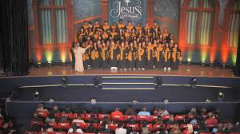

CORES
EM CORAIS
Explore o universo das cores, suas propriedades físicas, percepção visual e aplicações na arte, design e tecnologia.
Explore o universo das cores, suas propriedades físicas, percepção visual e aplicações na arte, design e tecnologia.

As cores em corais de igreja (ou grupos de louvor) transmitem mensagens e emoções importantes.
Elas ajudam a unificar o grupo visualmente e alinhar o tom do culto. Os estilos mais comuns
variam de tons suaves e neutros a cores vibrantes para datas especiais.
Existem momentos especiais dos quais as cores estão associadas há um proposito especifico, ou
quando usam o padrão
para a SANTA CEIA. Além das becas, existem momentos dos quais o grupo ultiza palatas de cores
especificas como por exemplo:
ROSA: Homenagem para Mulheres ou Otubro ROSA.
AMARELO: Ação em prol do Setembro Amarelo
OF WITH: Para representar boas novas e um novo tempo.
Os corais nas igrejas surgiram há muitos séculos, ainda nos primeiros períodos do cristianismo, quando o canto era usado para ajudar na oração e na transmissão das mensagens religiosas.
Diferente de apresentações comuns, o coral na igreja tem a função de envolver a congregação, ajudando as pessoas a se sentirem mais conectadas durante o culto através da música.
Em muitas igrejas, os integrantes do coral usam roupas padronizadas (geralmente brancas) para simbolizar unidade, pureza e igualdade entre os membros, independentemente de posição social.
Apresentação BEGE.
Apresentação BRANCO.
.JPG)
Apresentação BECA SANTA CEIA.
.JPG)
Apresentação OFF WHIT em prorama.
.JPG)
Apresentação ROSA.
.JPG)
Apresentação AZUL.
PALETA DE CORES PARA UMA APRESENTAÇÃO
Objetivo:
Desenvolver uma paleta de cores que represente uma apresentação de coral, levando em
conta sentimentos, identidade visual e significado das cores.
Instruções:
Você irá criar uma paleta de cores (3 a 5 cores) para um coral de igreja ou coral musical.
Passo a passo:
Escolha o tipo de apresentação do coral:
Ex: coral infantil, coral jovem, coral de igreja, coral natalino.
Defina o sentimento da apresentação:
Ex: alegria, paz, adoração, celebração, emoção